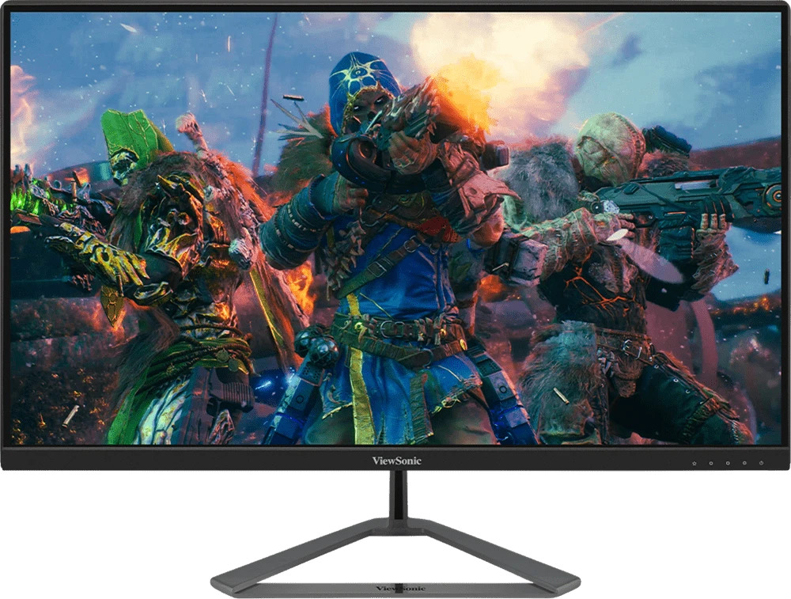

Завдяки захоплюючій частоті оновлення 170 Гц ViewSonic VX2780J-2K забезпечує приголомшливі враження від перегляду. Монітор із високою частотою оновлення 170 Гц забезпечує плавне відображення рухомих об'єктів і мінімальну затримку введення. Змінна частота оновлення запобігає розривам і ривкам зображення для плавного ігрового процесу. Завдяки часу відгуку MPRT 1мс монітор дає безпрецедентну якість і швидкість зображення. Монітор VX2780J-2K також обладнаний ексклюзивними попередніми налаштуваннями ViewMode™ від ViewSonic, які забезпечують оптимальну продуктивність екрана для різних домашніх розважальних сценаріїв роботи, як-от перегляд фільмів, редагування або гра у відеоігри. Крім того, інтерфейси DisplayPort і HDMI забезпечують гнучкі можливості під'єднання до різноманітних джерел сигналу.
Висока частота оновлення 170 Гц OMNI VX2780J-2K забезпечує бездоганну гру та редагування відео без необхідності розгону. Плавні, високоякісні візуальні ефекти дають вам можливість точно вражати цілі знову та знову, незалежно від того, наскільки швидко вони рухаються. Коли важливий кожен кадр, не варто нічого пропускати.

Завдяки технології AMD FreeSync™ Premium монітор може адаптуватися до комп'ютерних ігор, щоб зображення було стабільним і не розривалося навіть у найбільш напружені моменти.

Час відгуку 1 мс (MPRT) забезпечує кращу продуктивність завдяки плавному переключенню пікселів від кольору до кольору та зменшенню колірних ореолів.

Роздільна здатність QHD удвічі перевищує роздільну здатність традиційного дисплея 1080p, що забезпечує набагато чіткіше зображення без викривлень і розтягнень за збереження стандартного співвідношення сторін 16:9.

Швидка IPS-панель OMNI VX2780J-2K забезпечує чудову передачу кольору, що поєднує у собі високу точність та яскравість, тому ви можете повністю зануритися у гру. У поєднанні з широким кутом огляду монітора у вас завжди буде найкраще місце для перегляду.
VX2780J-2K був розроблений з урахуванням стандартів енергоефективності та має режим Eco Mode, в якому монітор споживає менше енергії, що призводить до меншого викиду вуглекислого газу і скорочення накладних витрат офісу.